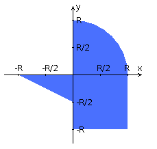

Разработать PHP-скрипт, определяющий попадание точки на координатной плоскости в заданную область,
и создать HTML-страницу, которая формирует данные для отправки их на обработку этому скрипту.
Параметр R и координаты точки должны передаваться скрипту посредством HTTP-запроса.
Скрипт должен выполнять валидацию данных и возвращать HTML-страницу с таблицей,
содержащей полученные параметры и результат вычислений - факт попадания или непопадания точки в область.
Предыдущие результаты должны сохраняться между запросами и отображаться в таблице.
Кроме того, ответ должен содержать данные о текущем времени и времени работы скрипта.
Разработанная HTML-страница должна удовлетворять следующим требованиям:
- Для расположения текстовых и графических элементов необходимо использовать блочную верстку.
- Данные формы должны передаваться на обработку посредством POST-запроса.
- Таблицы стилей должны располагаться в отдельных файлах.
- При работе с CSS должно быть продемонстрировано использование селекторов элементов, селекторов классов, селекторов атрибутов, селекторов потомств а также такие свойства стилей CSS, как наследование и каскадирование.
- HTML-страница должна иметь "шапку", содержащую ФИО студента, номер группы и новер варианта. При оформлении шапки необходимо явным образом задать шрифт (monospace), его цвет и размер в каскадной таблице стилей.
- Отступы элементов ввода должны задаваться в пикселях.
- Страница должна содержать сценарий на языке JavaScript, осуществляющий валидацию значений, вводимых пользователем в поля формы. Любые некорректные значения (например, буквы в координатах точки или отрицательный радиус) должны блокироваться.

Изменение X: Radio {'-4','-3','-2','-1','0','1','2','3','4'}
Изменение Y: Text {-3 ... 3}
Изменение R: Text {1 ... 4}
Изменение Y: Text {-3 ... 3}
Изменение R: Text {1 ... 4}
| Результаты попаданий | |||
|---|---|---|---|
| Координаты | Время | Исполнение | Результат |